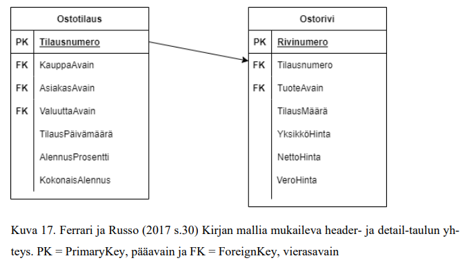

Header- ja detail-tauluilla tarkoitetaan otsikko- ja rivitason dataa. Yksi esimerkki tämänkaltaisessa lähdejärjestelmän tietorakenteessa voi olla esimerkiksi ostotilaukset ja niiden rivitason data. Ostotilaus voi sisältää esimerkiksi tilaajan tietoja kuten tilauksen numeron ja tilauksen kokonaisalennusprosentin. Ostorivit-taulu taas sisältää usein tarkemman tuotetason tiedon tilausmäärineen ja yksikköhintoineen. Tämänkaltainen kahden taulun välillä toimiva yhteys (kuva 17) ei kuitenkaan toimi muistipohjaisissa relaatiotietokannoissa.

Kuva 17. Ferrari ja Russo (2017 s.30) Kirjan mallia mukaileva header- ja detail-taulun yhteys. PK = PrimaryKey, pääavain ja FK = ForeignKey, vierasavain
Ostotilausta ja ostoriviä voidaan ajatella niin, että ostotilaus on dimensiotaulu ja ostorivi on faktataulu. Ostotilauksen ollessa ohjaavaa tietoa sisältävä dimensiotaulu, tehdään tietomallista tarpeettomasti lumihiutalemallin mukainen. Lumihiutalemallin tyylinen toteutus vaikuttaa kuitenkin aiemman 3.2. kappaleen kertomuksen mukaisesti negatiivisesti käyttömahdollisuuksiin. Tämän tyyppisissä tilanteissa data kannattaa yhdistää yhdeksi tauluksi tai näkymäksi jo ETL-vaiheessa. ETL-vaiheessa tiedot tulisi siirtää dimensiomaisesta ostotilaustaulusta ostorivi-taulun sisälle yhdistämällä data tilausnumeron avulla toisiinsa, ja viemällä tilauskohtaiset tiedot kuten kauppa, asiakas, valuutta, tilauspäivämäärä, alennusprosentti ja kokonaisalennus ostorivitauluun. Tämänkaltainen tilannekohtainen denormalisointi mahdollistaa datan helpomman luettavuuden ja ymmärtämisen. Tällöin käytettävissä oleva tietomalli sisältää tarpeellisen tiedon samalla helpottaen laskureissa ja laskennallisissa sarakkeissa käytettävän DAX-koodin käyttämistä.
VertiPaq-pohjaisten tietomallien sanakirjastoenkoodauksen ja RLE-pakkauksen toimiessa aiemmin mainitun tavan mukaisesti on todistettua, että tämänkaltaisissa tapauksissa kaksi header- ja detail-taulua on järkevää yhdistää yhdeksi tauluksi. Tämän kaltaisessa esimerkissä vältetään lumihiutalemallin käyttö joka helpottaa kehitystyötä. Koko tietomallia ei kannata kuitenkaan liittää yhdeksi tauluksi. Datan litistäminen eli taulujen yhdisteleminen toimii hyvin silloin kun taulut liittyvät suoraan toisiinsa, kuten tässä tapauksessa tilausnumeron kautta, mutta muissa tapauksissa se ei välttämättä ole kaikista toimivin vaihtoehto. Yleisesti taulujen yhdistäminen mahdollistaa tähtimallin toimimisen ja lumihiutalemallin välttämisen, niin silloin taulut on järkevää yhdistää.